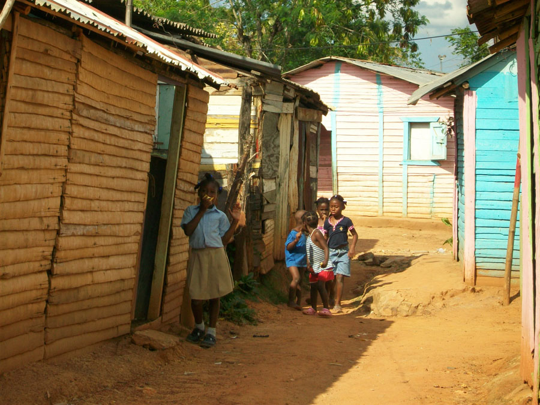

We fund medical care, daily meals, and transportation for 790 students at Futuro Vivo School — giving them a path to a brighter future.
Supporting Futuro Vivo is a 501(c)(3) nonprofit that funds medical care, transportation, and lunch for students at Futuro Vivo, a school serving some of the most disadvantaged children in the Dominican Republic. Our goal is to not only give the students an education, but also a sense of dignity and hope.
100% of every donation goes directly to the school. No administrative overhead. Every dollar changes a child's life.
Learn About Our Impact
Our programs remove the barriers standing between a child and a quality education.
We provide an on-site pediatrician, psychologist, psychiatrist, nurse, and social worker to Futuro Vivo — giving each child the physical and emotional support they need to thrive.
We also provide medical care to students' families, which in addition to improving their health and stability also helps ensure that their children can attend school more regularly.
We pay for gas and repairs to the buses that students depend on to attend Futuro Vivo. Students attend Futuro Vivo from as far as 20km away.
With help from the McCann Family Foundation, we provide cooking gas and utensils for the school to make lunch for the students. For 25% of students, this is their only meal of the day.
Every dollar you donate goes directly to the children at Futuro Vivo School.